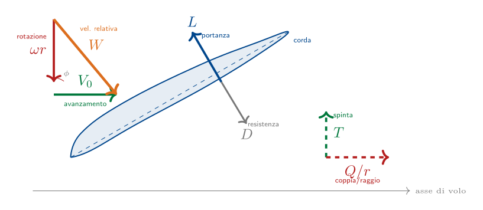
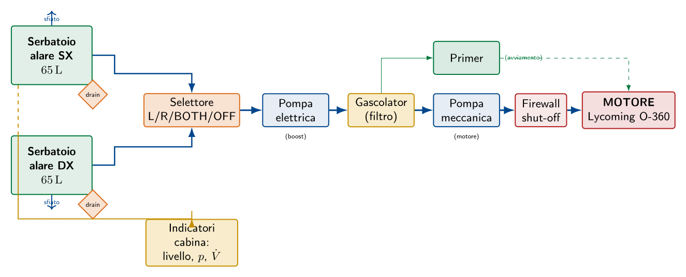

Esame di Stato 2017
Velivolo bimotore · Impianto idraulico · Prove di laboratorio
La prova del 2017 si concentra su tre temi che, nel loro insieme, coprono l'intero ciclo di vita del velivolo: la manutenzione (controlli periodici per garantirne l'aeronavigabilità), la propulsione (caratteristiche del sistema motore-elica che genera la spinta) e l'impianto combustibile (sottosistema che alimenta il motore). I quesiti 3 e 4 fanno esplicito riferimento al "velivolo sopra descritto", ovvero quello dimensionato nel quesito 1 della prima parte. Mantenendo la coerenza del nostro velivolo di riferimento — monomotore da turismo a quattro posti, MTOW $\approx 1100\,\mathrm{kg}$, motore Lycoming O-360 da 180 hp, autonomia operativa di 3 h — procediamo allo svolgimento dei quesiti.
Controlli per la manutenzione regolare del velivolo
Filosofie di manutenzione
Le moderne pratiche aeronautiche distinguono quattro filosofie di manutenzione, ciascuna applicabile in funzione della criticità del componente:
- Manutenzione correttiva
- Il componente viene riparato dopo il manifestarsi del guasto. Si applica solo a sistemi non critici per la sicurezza.
- Manutenzione preventiva programmata (hard time)
- Il componente viene sostituito al raggiungimento di un intervallo prefissato (ore di volo, cicli, tempo solare), prima che il guasto si verifichi. Richiede la conoscenza statistica della vita utile.
- Manutenzione preventiva "on condition"
- Il componente viene sostituito quando i suoi indicatori di stato (rilevati da ispezioni o sensori) mostrano segni di prossimo cedimento.
- Manutenzione "condition monitoring"
- Il componente viene sostituito sulla base dell'analisi statistica del comportamento di una popolazione di componenti simili.
Le quattro filosofie non sono esclusive: il programma di manutenzione di un velivolo le impiega congiuntamente, scegliendo la più adatta a ciascun sottosistema sulla base della sua criticità per la sicurezza, dell'impatto economico e della disponibilità di tecniche di ispezione.
Articolazione temporale dei controlli
I controlli si articolano su scale temporali diverse: dai più frequenti (giornalieri, prima di ogni volo) ai più approfonditi (a frequenza pluriennale). La loro organizzazione, comune all'aviazione commerciale e general aviation, è schematizzata nella tabella seguente.
| Livello | Periodicità | Operazioni tipiche |
| Pre-flight check | Prima di ogni volo | Ispezione visiva esterna, controllo livelli, controllo superfici mobili, controllo pneumatici, prove pre-decollo. |
| Daily check | Giornaliero | Verifica generale dello stato del velivolo, lettura del giornale di bordo, eventuale rettifica di anomalie minori. |
| A-check | 400–600 ore di volo | Ispezione visiva di superfici, comandi, impianti; controllo perdite olio/idraulico/combustibile; lubrificazione; eseguibile in hangar in una notte. |
| B-check | 6–8 mesi | Approfondimento dell'A-check con maggior dettaglio sui sistemi di bordo; oggi spesso assorbito nell'A-check "progressivo". |
| C-check | 20–24 mesi | Visita completa con apertura di pannelli ispettivi, smontaggio di componenti, lubrificazione completa, prove funzionali su tutti gli impianti. Velivolo fermo 1–3 settimane. |
| D-check | 6–10 anni | Revisione strutturale completa con velivolo smontato fino al cassone; ispezioni a ultrasuoni e correnti indotte sull'intera struttura; ricondizionamento. Fermo 1–2 mesi. |
Controlli giornalieri (daily check
e \emph{pre-flight})Il controllo pre-flight è eseguito direttamente dal pilota (o da personale tecnico abilitato) prima di ogni volo, secondo la checklist riportata nel manuale di volo. Esso comprende:
- Controllo della documentazione di bordo (giornale di bordo, certificato di aeronavigabilità in corso di validità, manuale di volo, dichiarazione di assicurazione, registro radio).
- Ispezione visiva esterna (walk-around): verifica dell'integrità del rivestimento (assenza di ammaccature o cricche visibili), del corretto allineamento delle superfici mobili, dell'assenza di perdite di olio/combustibile/idraulico, della pulizia delle prese d'aria e dei tubi di Pitot, dello stato dei pneumatici (pressione, usura), della sicurezza di portelloni e cofanature.
- Controllo livelli: livello del combustibile (campionatura tramite drain valve per accertare l'assenza di acqua), livello dell'olio motore, livello del fluido idraulico (se presente), pressione dei pneumatici, pressione dell'estintore.
- Verifica del corretto funzionamento dei comandi: prova di completa libera escursione di alettoni, equilibratore, timone, flap, trim.
- Prove pre-decollo (run-up check): a motore avviato, controllo dei parametri (regime, pressione olio, temperatura, magneti, carburatore con riscaldamento aria, generatore).
Controlli periodici dei sistemi del velivolo
Per ciascun sistema di bordo, il manuale di manutenzione del costruttore prescrive ispezioni periodiche, le cui principali sono riassunte nella tabella seguente.
| Sistema | Controlli tipici |
| Cellula (struttura) | Ispezione visiva, NDT (ultrasuoni, correnti indotte, liquidi penetranti) sui punti critici (attacco ala-fusoliera, longheroni, ordinate principali, attacchi del carrello), serraggio bulloneria di forza. |
| Motore | Controllo compressione cilindri, ispezione candele, controllo gioco valvole, sostituzione olio, sostituzione filtri, ispezione boroscopica della camera di combustione (motori a getto), sostituzione candele. |
| Elica | Controllo del passo, ispezione bordi pale per impatti (nicks), bilanciatura statica e dinamica, lubrificazione del mozzo a passo variabile. |
| Carrello | Controllo della pressione degli ammortizzatori (azoto/olio), controllo usura pastiglie freni, prova di estensione/retrazione, lubrificazione perni. |
| Impianto idraulico | Controllo pressione di esercizio, ispezione tubazioni e raccordi, sostituzione filtri, prova tenuta di valvole e martinetti. |
| Impianto elettrico | Verifica delle barre di carico, controllo delle batterie (capacità, densità elettrolito), ispezione cablaggi, prova generatori e regolatori. |
| Avionica | Built-in test (BIT) automatici, calibrazione strumenti di volo, prova autopilota, controllo trasponder, taratura altimetro (entro 24 mesi). |
| Comandi di volo | Controllo della tensione cavi (per comandi meccanici), prova escursione, ispezione attacchi e perni di cerniera, lubrificazione articolazioni. |
Documentazione e tracciabilità
Ogni intervento di manutenzione deve essere documentato e tracciato. Gli strumenti principali sono:
- Giornale di bordo (logbook): registra ogni volo, le ore di funzionamento del motore, eventuali anomalie segnalate dal pilota.
- Libretto di manutenzione del velivolo: registra ogni intervento eseguito, con data, descrizione, parti sostituite, firma del tecnico abilitato (Part-66) e dell'organizzazione di manutenzione (Part-145).
- Libretti dei componenti a vita limitata: motore, elica e altri componenti tracciati individualmente con totale ore in servizio e cicli.
- Airworthiness Review Certificate (ARC): certificato di revisione di aeronavigabilità rilasciato annualmente dalla CAMO sulla base della documentazione di manutenzione.
Caratteristiche principali della propulsione ad elica
Il sistema motore-elica
L'apparato propulsivo a elica è costituito da due sottosistemi distinti ma interconnessi:
- un motore (motore alternativo a pistoni o turbina a gas) che genera potenza meccanica all'albero, espressa in kilowatt o cavalli vapore;
- un'elica, calettata direttamente o tramite riduttore sull'albero motore, che converte la potenza meccanica in spinta propulsiva, ossia in potenza utile al volo.
In base al tipo di motore impiegato, si distinguono tre famiglie di propulsori a elica:
- Motoelica
- Il motore è un motore alternativo a pistoni a quattro tempi (ciclo Otto), tipicamente boxer raffreddato ad aria, alimentato ad avgas. È la soluzione standard per l'aviazione generale (potenze fino a $\sim350\,\mathrm{hp}$).
- Turboelica
- Il motore è una turbina a gas (compressore + camera di combustione + turbina), che fornisce potenza all'elica tramite un riduttore. Soluzione tipica per velivoli da trasporto regionale (ATR-72, Bombardier Q400) e per molti militari da addestramento.
- Elettroelica
- Il motore è un motore elettrico alimentato da batterie o celle a combustibile. Tecnologia in via di sviluppo (Pipistrel Velis Electro, primo velivolo elettrico certificato EASA nel 2020).
Funzionamento aerodinamico dell'elica
L'elica è costituita da un mozzo centrale e da due o più pale che si comportano come piccole ali rotanti: ogni sezione di pala è un profilo aerodinamico che, investito dal flusso, genera una forza aerodinamica le cui componenti sono:
- una componente assiale (lungo l'asse di rotazione), diretta in avanti, che costituisce la spinta dell'elica;
- una componente tangenziale, che si oppone alla rotazione e dà luogo alla coppia resistente, equilibrata dalla coppia motrice.
La velocità relativa che investe ciascuna sezione di pala è la composizione vettoriale di due velocità:
- la velocità di avanzamento $V_0$ del velivolo, parallela all'asse;
- la velocità di rotazione $\omega r$, tangenziale, che varia linearmente con il raggio $r$.

Spinta e potenza dell'elica
Applicando il teorema della quantità di moto al tubo di flusso attraversato dall'elica, la spinta vale: $$T = \dot{m}_a (u_w - V_0)$$ ove $\dot{m}_a$ è la portata massica d'aria attraversata dal disco dell'elica e $u_w$ la velocità della scia a valle dell'elica stessa. La potenza propulsiva effettivamente utilizzata per il volo è il prodotto della spinta per la velocità di avanzamento: $$P_p = T \cdot V_0$$ Il rendimento propulsivo dell'elica è definito come rapporto fra la potenza propulsiva e la potenza all'asse fornita dal motore ($P_{asse}$): $$\eta_p = \frac{P_p}{P_{asse}} = \frac{T \cdot V_0}{P_{asse}} = \frac{2\,V_0}{u_w + V_0}$$ L'ultima espressione mostra che $\eta_p$ tende a $1$ solo quando $u_w \to V_0$, ossia quando la scia è poco accelerata: ciò richiede una grande portata d'aria, ottenibile con eliche di grande diametro. Nelle eliche aeronautiche di buona progettazione il rendimento massimo si attesta su valori di $\eta_p \approx 0{,}80$–$0{,}85$.
Eliche a passo fisso ed eliche a passo variabile
Il passo dell'elica ($p$) è la distanza che essa percorrerebbe avanzando in un mezzo solido durante una rotazione completa, ed è legato all'angolo di calettamento delle pale. Si distinguono due tipologie:
- Eliche a passo fisso (fixed-pitch)
- L'angolo di calettamento è fissato in costruzione. Sono semplici, leggere ed economiche, ma il rendimento è ottimale solo a una velocità di volo specifica: si distinguono eliche da decollo (passo corto, ottimizzate per la salita) ed eliche da crociera (passo lungo, ottimizzate per la velocità). Tipiche dei velivoli scuola e ULM.
- Eliche a passo variabile (constant-speed)
- L'angolo di calettamento può essere modificato in volo da un meccanismo idraulico o elettrico. Un governor regola il passo automaticamente in modo da mantenere costante il regime di rotazione del motore al variare della velocità di volo: il pilota agisce indipendentemente sul gas (potenza) e sul passo (giri). Il rendimento è massimizzato in tutte le fasi di volo. Sono lo standard nei velivoli da turismo medi e in tutti i turboelica.
Vantaggi e limiti della propulsione a elica
| Vantaggi | Limiti |
| Elevato rendimento propulsivo a velocità subsoniche moderate ($\eta_p$ fino a 0{,}85). | Limite di velocità: oltre $M \approx 0{,}65$ il rendimento crolla per la formazione di onde d'urto sulle estremità delle pale. |
| Eccellente prestazione al decollo: la spinta diminuisce poco con la velocità, garantendo grande spinta a bassa $V$. | Limite di quota: nei motori alternativi la potenza diminuisce con la quota per la rarefazione dell'aria (pressione di alimentazione). |
| Potenza in eccesso utile per la salita e le manovre di emergenza. | Effetti collaterali sul velivolo: coppia di reazione (rollio), effetto giroscopico, effetto P, soffio dell'elica sulle superfici di coda. |
| Bassi consumi specifici nei motori alternativi ($c_{sf} \approx 0{,}25$–$0{,}30\,\mathrm{kg/(kW\cdot h)}$). | Rumorosità a terra significativa (impulsi periodici delle pale). |
| Possibilità di passo bandiera (feathering) per ridurre la resistenza in caso di motore in avaria. | Maggiore complessità meccanica rispetto al getto puro (riduttori, governor, mozzo a passo variabile). |
Effetti collaterali dell'elica sul velivolo
La rotazione dell'elica produce sul velivolo una serie di effetti collaterali che il pilota deve compensare con i comandi di volo:
- Coppia di reazione: la coppia che il motore esercita sull'elica per farla girare in senso orario (visto dal pilota) si scarica sulla cellula in senso antiorario, tendendo a far rollare il velivolo a sinistra. Si compensa progettando l'ala destra con incidenza leggermente maggiore.
- Effetto P (P-factor): a incidenze elevate (decollo, volo lento) la pala discendente ha un angolo d'attacco maggiore di quella ascendente, generando una spinta asimmetrica che tende a imbardare il velivolo a sinistra.
- Effetto giroscopico: l'elica si comporta come un giroscopio; ogni manovra di beccheggio produce un'imbardata e viceversa.
- Soffio dell'elica: la scia dell'elica investe la coda con un flusso elicoidale che esercita una pressione asimmetrica sulla deriva, tendendo a imbardare il velivolo. Si compensa disassando lievemente il motore o installando un trim tab sul timone.
Descrizione schematica dell'impianto combustibile
Specifiche di progetto
Per il velivolo di riferimento (Lycoming O-360, autonomia operativa di 3 h + 0,5 h di riserva) le specifiche dell'impianto sono:
- volume di combustibile: $V_c \approx 130\,\mathrm{L}$ (corrispondenti a $\sim94\,\mathrm{kg}$);
- portata di alimentazione massima: $\dot{V}_{\max} \approx 40\,\mathrm{L/h}$, corrispondenti al consumo a piena potenza;
- pressione di alimentazione al carburatore: $0{,}2\,\mathrm{}$–$0{,}5\,\mathrm{bar}$ (relativa);
- tipo di combustibile: avgas 100 LL (densità $\rho_c = 0{,}72\,\mathrm{kg/L}$);
- esercizio garantito: in tutte le condizioni di assetto previste dalla certificazione (incluso decollo a $\theta = +20°$ e volo livellato a sbandamenti fino a $30°$).
Architettura dell'impianto
L'impianto è organizzato in cinque sottosistemi funzionali, descritti nei paragrafi seguenti.
Stivaggio.
La soluzione adottata è quella dei serbatoi alari integrali: il combustibile è ricavato direttamente nel cassone alare fra i due longheroni, in due vani simmetrici da 65 L ciascuno. Le centine interne, opportunamente sigillate, fungono da paratie anti-sbattimento (anti-slosh) che smorzano le oscillazioni del fluido durante le manovre. La parte superiore di ciascun serbatoio è dotata di uno sfiato con valvola di non ritorno che assicura la ventilazione (impedendo la depressione durante l'aspirazione e lo sfogo dell'aria durante il rifornimento). Il punto più basso di ciascun serbatoio ospita un pozzetto di raccolta (sump) dotato di valvola di drenaggio (drain valve), accessibile dall'esterno, che il pilota apre prima del volo per scaricare eventuale acqua di condensa accumulatasi.Alimentazione.
Dal pozzetto di ciascun serbatoio parte la tubazione di mandata che conduce al selettore di alimentazione, una valvola a quattro posizioni accessibile al pilota dalla cabina:- LEFT: alimentazione dal solo serbatoio sinistro;
- RIGHT: alimentazione dal solo serbatoio destro;
- BOTH: alimentazione da entrambi (uso normale in crociera);
- OFF: chiusura totale dell'impianto (per emergenze e a velivolo a terra).
Pressurizzazione e pompaggio.
A valle del selettore si trova una pompa elettrica ausiliaria (boost pump) attivata dal pilota nelle fasi critiche (avviamento, decollo, atterraggio, virate accentuate) e una pompa meccanica trascinata direttamente dal motore, che assicura l'alimentazione in volo normale. La pompa elettrica è in parallelo a quella meccanica e fornisce ridondanza in caso di avaria di quest'ultima. Sui velivoli da turismo l'alimentazione può anche avvenire a gravità per i serbatoi alari posti sopra il motore (configurazione ad ala alta tipo Cessna 172): in tal caso la pompa è solo di ausilio.Filtraggio.
Lungo la linea, prima dell'ingresso al motore, è installato il gascolator, un filtro decantatore con vaschetta trasparente posta nel punto più basso del circuito. Esso separa per gravità acqua e sedimenti (più densi del combustibile), che si raccolgono sul fondo della vaschetta da dove possono essere scaricati prima del volo tramite un'apposita drain valve. A monte e a valle del gascolator sono presenti elementi filtranti di sicurezza.Misura e controllo.
In ciascun serbatoio è installata una sonda di livello, generalmente di tipo capacitivo: due cilindri coassiali costituiscono le armature di un condensatore la cui capacità varia con il livello di combustibile (il dielettrico è in parte combustibile, in parte aria, e la loro proporzione varia con il livello). Il segnale è inviato a un indicatore di livello in cabina, tarato in litri o in galloni. A bordo sono inoltre presenti: un indicatore di pressione del combustibile, un flussometro (per la portata istantanea), un primer per l'iniezione di combustibile diretto al cilindro durante l'avviamento a freddo, e una valvola firewall (shut-off valve) sulla paratia parafiamma che il pilota può chiudere dalla cabina per isolare il motore dai serbatoi in caso di incendio.Schema funzionale

Sicurezza dell'impianto
L'impianto combustibile è classificato dalla CS-23 come sistema critico per la sicurezza, e presenta diversi livelli di ridondanza e protezione:
- Doppio serbatoio con possibilità di alimentazione indipendente: se un serbatoio si rompe o si contamina, l'altro garantisce comunque l'alimentazione del motore.
- Doppia pompa (meccanica + elettrica) in parallelo: ridondanza attiva sull'alimentazione.
- Valvola firewall: in caso di incendio motore, il pilota chiude l'alimentazione e isola la zona infiammabile dai serbatoi.
- Drain valves su serbatoi e gascolator per il controllo pre-volo dell'acqua di condensa.
- Sfiati tarati per evitare sia depressioni (cavitazione delle pompe) sia sovrapressioni dei serbatoi.
- Indicatore di pressione in cabina: una caduta di pressione segnala al pilota un'anomalia in atto (filtro intasato, pompa in avaria, perdita).